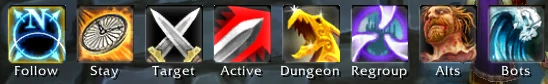
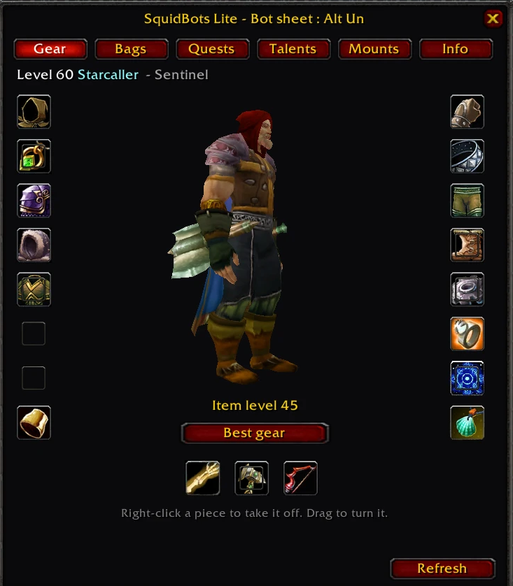
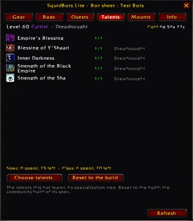
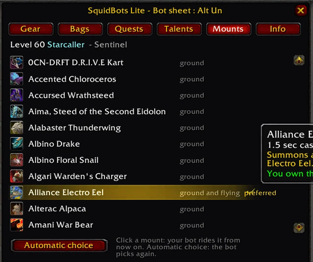
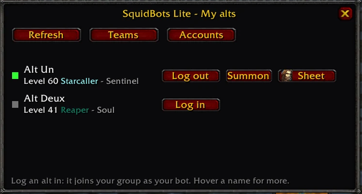

Your first bot no GM needed
You do not need GM rights, an addon or any setup. Type this as a normal chat message in one of the public channels (General, World, LookingForGroup, Zone, Newcomers) — no dot in front:
lfg bot healFree bots able to play that role whisper you back, each with its class, specialization and level. Invite the one you like and it joins immediately, teleports to you, and plays from there like any group member.
The role word is optional and you can ask for several at once:
lfg bot → every role
lfg bot tank
lfg bot heal
lfg bot tank dps → both at onceBots offered this way are picked close to your level (within a couple of levels by default), which is why this works at level 12 as well as at 80.
Why not /who?
On most realms the bots are hidden from /who so the player list stays readable. That is exactly why lfg bot exists: it is the way to find them without GM commands.
The SquidBots Lite addon optional, recommended
Everything below can be done by typing. The addon simply makes it comfortable: a movable bar, role icons on the party frames, a per-bot menu, and a full character sheet for each bot.


/sbl bot <name>): 3D model, item level, every slot. Drag an item onto it to give it, right-click a piece to take it back. The sheet opens on its own when a bot trades with you.

Other panels: /sbl specs (specializations window), /sbl alts (see below). Key bindings live in Escape > Key Bindings > SquidBots Lite. The addon warns you at login when the server is newer than your copy.
Download and full addon documentation: github.com/Zyth45/squidbots-addon
Talking to a bot no GM needed
Two ways to give an order:
- To the whole group — just type in party or raid chat. Every bot obeys.
- To one bot — whisper it:
/w Kegarink Bot stats.
A trailing ? shows instead of changing. co ? lists its combat strategies, co +thing adds one, co -thing removes one.
| Command | What it does |
|---|---|
follow / stay / flee | movement |
attack | attack your target |
summon | bring it to you |
formation <name>, position | where it stands in the group |
co ? / nc ? | its strategies, in and out of combat |
co +passive / co -passive | stop it attacking / let it fight again |
stats | health, mana, gold, bag space |
talents spec list | every spec of its class, with roles, > marks its own |
talents spec <name> | switch its specialization (tank, heal, dps, random work too) |
give leader | whispered to a bot: it hands you group leader |
release | whispered to a dead bot: it releases |
help | the full list |
Dungeons no GM needed
Build your group with lfg bot tank / lfg bot heal and walk in, or queue through the Dungeon Finder — bots queue too and will fill your group.
Inside, you do not have to micro-manage. Bots read what dungeon and raid enemies are casting, interrupt and move out accordingly. A few things worth knowing:
- Pulling. By default you pull. To let a bot tank pull by itself, whisper it
nc +coa auto pull(andnc -coa auto pullto stop). - Marking.
rti skullwhispered to a bot makes the skull its target;co +mark rtimakes it always attack the marked target (co -mark rtito stop). - Focus healing. Whisper a healer
focus heal +<name>to prioritise someone,focus heal clearto go back to normal. - Runners. Damage dealers switch to a mob running off to fetch help, instead of letting it bring the next pack.
- Bots stop chasing an enemy that pulls them too far away from the fight.
Raids no GM needed
One command fills a whole raid with bots, with a sane composition:
.playerbots coa raid 10
.playerbots coa raid 25A 25-man comes with 3 tanks and 6 healers by default. You can state your own: .playerbots coa raid 25 2 5 (size, tanks, healers).
Arenas & battlegrounds no GM needed
Bots queue for battlegrounds on their own, and they play arena properly rather than standing in a line:
- they take position before the gates open, each role where it belongs;
- they use line of sight and cover, kite when kiting is right, and focus a target together;
- they peel for whoever is being trained;
- they purge enemy buffs — in arena they also purge the enemy players they can see within 30 yards, their own target first, one bot per buff.
For a ready check before the gates, the server can place a visible ready marker with a countdown — that is on by default.
Gear and loot no GM needed
Bots you recruit are geared for their level when they join. From then on:
- they equip upgrades they loot themselves (an item has to beat what they wear by a clear margin, 10% by default);
- you can hand them gear: trade them, or drag an item onto their sheet in the addon;
autogearre-gears a bot to the quality the server allows — this can be switched off entirely by the server, so do not count on it;repair,sell,bankandtrainer learn(with a trainer targeted) handle the usual chores.
Your own alts as bots no GM needed
Your other characters can play alongside you, driven by the bot AI. They are your characters: their gear, their level, their bags.
.playerbots bot add <name> bring one of your characters in
.playerbots bot list see yours
.playerbots bot remove <name> send it away
.playerbots bot addaccount bring in the characters of a linked account
/sbl alts or the Alts button): every character you can call, its XP bar, your saved teams and your linked accounts.Linking a second account
To use characters from another of your accounts, link them once:
.playerbots account setKey <key> on the account to be linked
.playerbots account link <account> from your main account
.playerbots account linkedAccounts
.playerbots account unlink <account>Two server settings matter here and your server owner controls them: whether your alts log in automatically with you, and whether they stay in the group when you leave.
GM commands self-hosted / GM only
Everything below needs GM rights. On your own server:
.account set gmlevel <account> 3 -1then relog.
Recruiting
| Command | What it does |
|---|---|
.playerbots coa tank|heal|dps | recruits a CoA bot of that role, rebuilt exactly at your level — gear and talents, up as well as down — and teleported to you |
.playerbots coa heal sun cleric | same, of a named class |
.playerbots coa raid 25 3 6 | fills your raid; no limit and no cooldown for a GM |
.playerbots coa regear [level] | re-gears every random bot online of that level or above (60 by default) to the quality the config gives now |
.playerbots coa tank|heal|dps is GM-only. Players use lfg bot instead — and .playerbots coa raid, which is open to them, within the limits above.
Managing bots
| Command | What it does |
|---|---|
.playerbots bot addclass <class> | creates a bot of a given class |
.playerbots bot self | drives your own character like a bot |
.playerbots rndbot stats | the state of the random bot population |
.playerbots rndbot teleport | sends them all to a zone fitting their level, now |
.playerbots rndbot grind | sends them hunting |
.playerbots rndbot init | redoes level, gear and talents |
.playerbots rndbot levelup | gives them a level |
Firstname Bot. Core commands that take a player name (.summon, .appear) cut at the first space and quotes do not help. Target the bot and use the bare command, or shift-click its name to get a player link.
Population and levels self-hosted
How many, and at what level
AiPlayerbot.RandomBotMinLevel = 1
AiPlayerbot.RandomBotMaxLevel = 60Nothing can put a bot outside that range. If your max is below your own level, no bot will ever reach you.
Level brackets
Bots are spread across level brackets and periodically rebalanced, so starting zones keep seeing newcomers while the bots already there level up and move on.
AiPlayerbot.LevelBrackets.Enabled = 1
AiPlayerbot.LevelBrackets.NumRanges = 8
AiPlayerbot.LevelBrackets.CheckFrequency = 300
AiPlayerbot.LevelBrackets.FreshStart = 1
AiPlayerbot.LevelBrackets.FreshStartSpread = 1Playing alone and out-levelling everyone? Make the bots follow you:
AiPlayerbot.LevelBrackets.Dynamic.UseDynamicDistribution = 1
AiPlayerbot.LevelBrackets.Dynamic.RealPlayerWeight = 10The weight pulls bots toward brackets containing real players. 1.0 is a gentle nudge, 3.0 is noticeable, 10 to 15 is what you want for solo play. It re-balances every CheckFrequency seconds.
Classes and races
AiPlayerbot.CoaClassesOnly = 1On: bots only roll the 21 CoA classes (ids 12 to 32). Off: they also roll the nine WotLK classes no player can create — which leaves them with no CoA spells, no spec, and nothing in the rotation tables. Keep it on.
Existing bots keep their class and race forever. To apply a change you have to recreate the pool:
AiPlayerbot.DeleteRandomBotAccounts = 1 → start worldserver, let it finish
AiPlayerbot.DeleteRandomBotAccounts = 0 → start againUseful settings self-hosted
All of these live in playerbots.conf.
| Setting | Effect |
|---|---|
AiPlayerbot.CoaLfgBots | the lfg bot system, on by default |
AiPlayerbot.CoaLfgChannels | which channels it listens to |
AiPlayerbot.CoaLfgTankOffers / HealOffers / DpsOffers | how many bots answer (2 / 2 / 3, max 5) |
AiPlayerbot.CoaLfgLevelRange | how far from your level they may be (2) |
AiPlayerbot.CoaLfgOfferMinutes | how long an offer is held (2) |
AiPlayerbot.CoaRaidPlayerMax / CoaRaidPlayerCooldown | player-built raids: 5 at a time, one every 30 min |
AiPlayerbot.AutoEquipUpgradeLoot / EquipUpgradeThreshold | bots equipping their own loot (on, 1.1×) |
AiPlayerbot.AutoGearCommand / AutoGearCommandAltBots | the autogear commands — set to 0 for a loot-only realm |
AiPlayerbot.RandomGearQualityLimit / RandomGearScoreLimit | how good random bots' generated gear may be |
AiPlayerbot.RandomGearLoweringChance | share of bots deliberately given sub-optimal gear |
AiPlayerbot.BotAutologin | log a player's alts in with them |
AiPlayerbot.KeepAltsInGroup | alts stay in the group when the master leaves |
AiPlayerbot.MaxAddedBots | how many bots one player may hold |
AiPlayerbot.CoaArenaPurge, CoaArenaFocus, CoaArenaPeel, CoaArenaKite… | arena behaviours, each switchable on its own |
.reload config — no restart needed. Anything touching how bots are created (class, race, level range) needs the pool recreated instead.
When something is wrong self-hosted
| Symptom | Usual cause |
|---|---|
| Your config changes keep reverting | the launcher regenerates worldserver.conf at every start — edit the template in Settings\, not the generated file |
No bot answers lfg bot | the channel is not in CoaLfgChannels, or no free bot is within CoaLfgLevelRange of you |
| Bots never reach your level | RandomBotMaxLevel is below it |
| No bots around you while levelling | dynamic distribution is off — see Population and levels |
| A command answers nothing at all | your build is older than the command; check what .playerbots alone prints |
| A bot ignores you | it is not in your group |